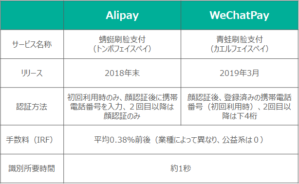

中国は蓄積した膨大なデータを活用し顔認証技術の高度化を進めてきました。政府も2019年は「顔認証元年」と位置づけるなど顔認証の利用を強力に推進してきています。顔認証決済の制度も整備され、顔認証決済ユーザーは既に1億人を超えています。Alipay・WeChat Payという2強も既に顔認証決済サービスでユーザー獲得競争を繰り広げています。今回はそんな中国における顔認証決済の動向を紹介します。
既に身近な顔認証技術
近年、TikTokを始め中国発のソーシャルアプリ、スマホ用ゲームが世界的に人気を博していますが、昨年、中国で一時「ZAO」というアプリが爆発的な人気を得た時期がありました。
「ZAO」とは、自分の顔写真をアップロードすることで提供された映像素材と合成し、あたかも自分がその役者になったかのような映像を簡単に作成できるというもので、「deepfake」技術を利用しています。正直、私の目ではそれが合成かどうか、一部分の映像で違和感を覚えた以外は、何の問題もなかったです。
中国科学院情報技術研究所によれば、コンピューターによる顔識別の正確度は99.15％、人間の目視の97.52%よりも高くなっています。しかし、その際に問題になったのがプライバシーポリシーの一文。「顔データを無料で永続的に提供し、取消不能かつ第三者への譲渡、再ライセンスを可能にする」との記述への批判が殺到、最終的にはプライバシーポリシーは改訂されるに至りました。
この時、同時に顔認証決済の安全性にも当然ながら話が波及しました。今後「deepfake」技術が発達することで不正な顔認証決済が行われるのではないかと心配する人が続出したのです。そこで、この議論が勃発した直後に、Alipayの運営会社であるアント・フィナンシャルは「絶対に顔認証技術が突破されることはなく、不正利用があった際は被害金額を全額保証する」と発表しています。
中国で顔認証の技術が格段に上がっている要因の一つは、莫大な情報、データが蓄積されているからです。例えば、中小規模の都市のマンションですら、その敷地に入るためには、顔認証を行わなければいけないところが増えてきています。また、政府によって街中の至るところに監視カメラが設置されていて、政府の後押しもあって顔識別技術の向上が進んでいます。中国は2019年を「顔認証元年」と位置付けて強力に推し進めてきました。
法規制と市場
法制度に関しては、今年の１月に中国決済清算協会（Payment & Clearing Association of China）から『オフライン顔認証決済における自律公約』が発表されました。顔認証決済技術の安全リスク、公共の利益の保護、などが謳われていますが、その第二章安全管理の第八条で「ユーザーが顔認証決済を利用する際は、サービス提供者はワンタイムパスワードやその他の技術も同時に利用する」とされています。つまり、顔認証だけでは本人が決済意思を表明したとは見做さず、追加的な認証手段を通して、本人の意思で能動的に決済が行われたことを示す必要があると読み取れます。
この業界自主規制以前に、2015年12月に公布されています「非銀行決済機関のインターネット決済業務に掛かる管理規定法」においても、決済機関は「ユーザーしか知りえない要素（ex.静的パスワード）」、「ユーザー本人特有、複製や繰返し利用できない要素（ex.デジタル証明書やワンタイムパスワード）」、「ユーザー本人の生理的特徴となる要素（ex.指紋等）」を組合せることができるとされています。また、顔認証決済に関してオフライン決済（実店舗における決済）は認められているものの、オンライン決済（ECなどネット上における決済）における顔認証決済は監督機関から許可されていません。理由の一つとしては、オンライン決済における顔認証の精度がユーザーの使用する端末の性能に左右される可能性があるためです。
中国の大手調査会社アイ・メディアの調査報告によると、2018年で顔認証決済を利用するユーザーは0.61億人でしたが、大手各社の顔認証決済の推進もあり2019年には1.18億人に拡大、2022年には、顔認証決済ユーザーは7.6億人に達すると推定されています。2019年に最も顔認証決済が利用された場所としては、トップがスーパーマーケットやコンビニエンスストアの40.7％、第２位が商業施設での買い物で35.2％、第3位が自動販売機（27.8％）、第4位、第5位に娯楽施設での消費（26.9％）、飲食店での消費（19.4％）がランクインしています。（調査対象者数1,357人、複数選択可能なため、合計が100％を超えています。）
Alipay・WeChatPay二大巨頭の動きと事例
現状中国における顔認証決済がどれだけ市民権を得ているか見ていきたいと思います。日本でも青いシールに「支」、緑のシールに「ふきだしの絵」を見かけない日がないほど日本で広まった「Alipay」と「WeChatPay」は中国決済の二大巨頭であり、それぞれ2社ともに顔認証決済サービスを中国で提供しています。以下が比較図になります。

「Alipay」と「WeChatPay」の顔認証決済サービス（サービス名称の日本語訳は筆者）
２社とも積極的に顔認証決済サービスを推し進めています。例えば、顔認証決済に必要な端末購入に２社とも購入補助金を提供しています。Alipayでは、Alipayブランドのトンボシリーズの小型端末であれば、最大1600元（約2万5千円）、大型ディスプレイ付きの端末については最大で4800元（約7万5千円）の補助金を提供しています。小型であれば1500元～2000元前後のため、補助金端末購入費の全額を賄うことができます。端末の購入補助以外にも、顔認証決済を利用したユーザー１人当たり10円程度（上限有）の奨励金も出しています。
また、顔認証決済以外に、WeChatの顔認証決済端末である「カエルPro」を利用し、WeChatカード会員機能とミニプログラムを組み合わせることで、ユーザーが顔認証決済を行った際に、同時に会員登録できるサービスも提供しています。これにより、加盟店としては効率よく会員の獲得が可能になりました。Alipayの事例では、ホテルのチェックインに利用しています。端末で身分証と顔認証で本人確認し、顔認証決済またはQR決済を行うことでチェックインが完了します。ルームキーとなるカードもその端末から払い出されるサービスを提供しています。決済のみの留まらないサービス作りがされています。
- WeChat Payの実演動画：https://v.qq.com/x/page/i3018p97ao3.html
- Alipayを利用した、ホテルでの顔認証：https://render.alipay.com/p/f/fd-jqovmr1s/detailf2r82swwel.html
中国での市場獲得の戦場は、QR決済戦争から顔認証決済へと既に移っています。


{kind=link}
{kind=link}